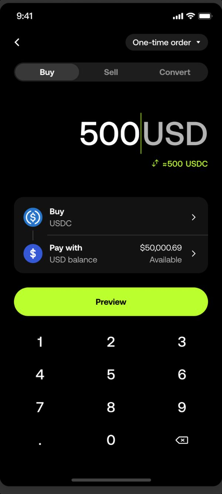
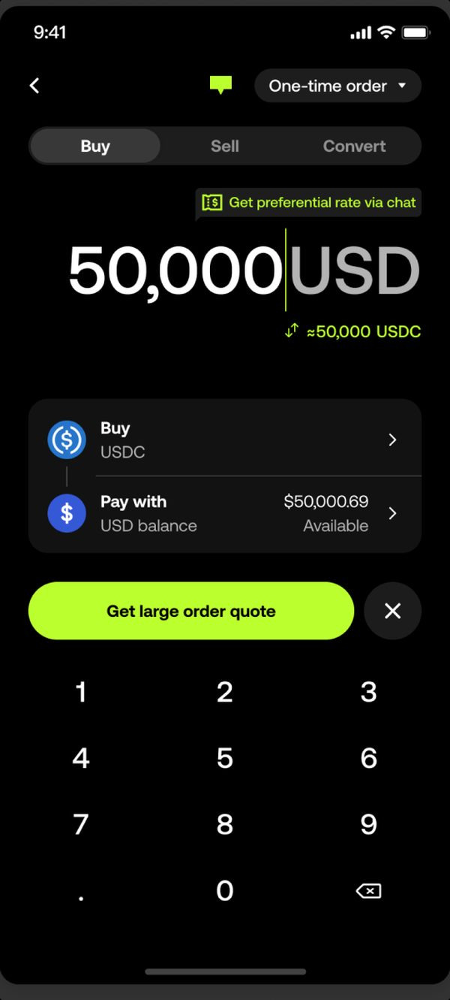
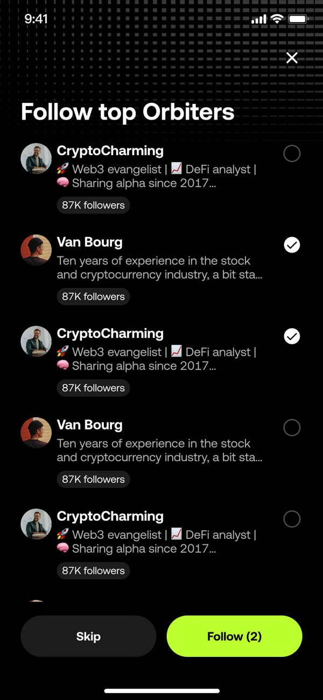
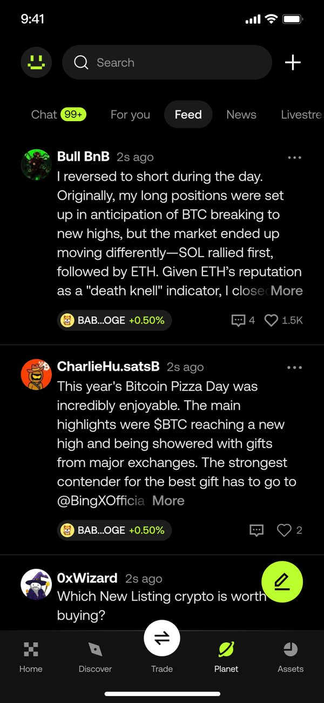
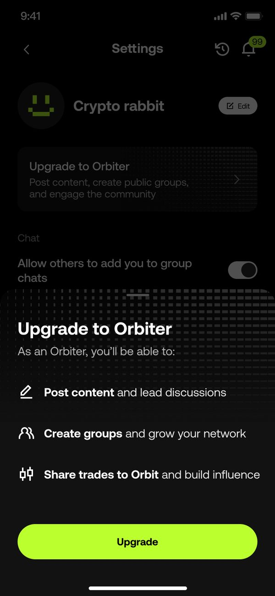
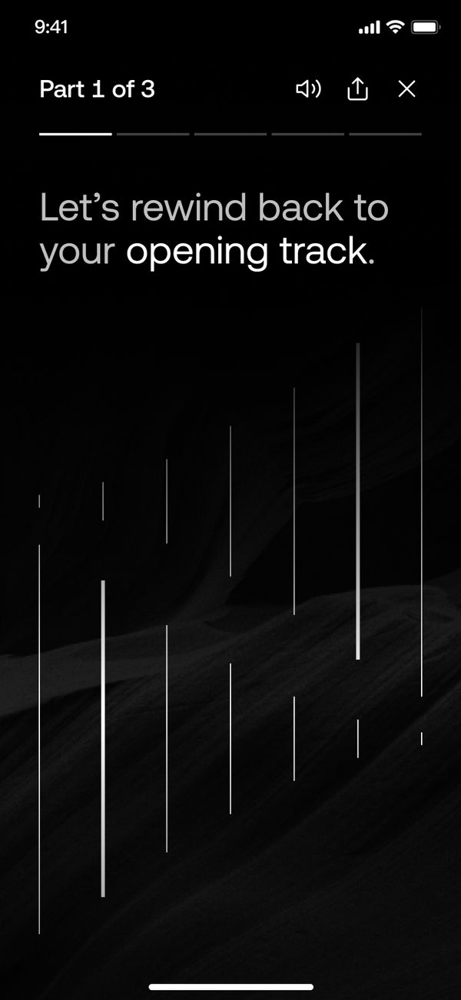
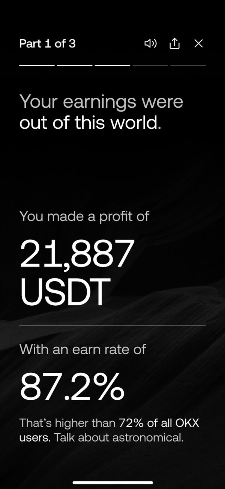
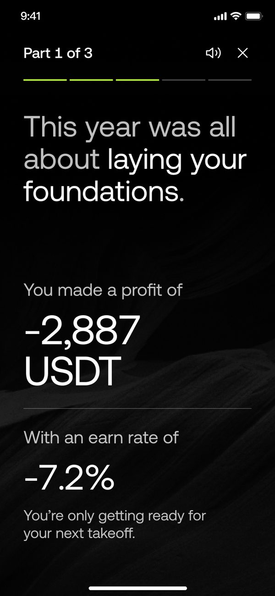
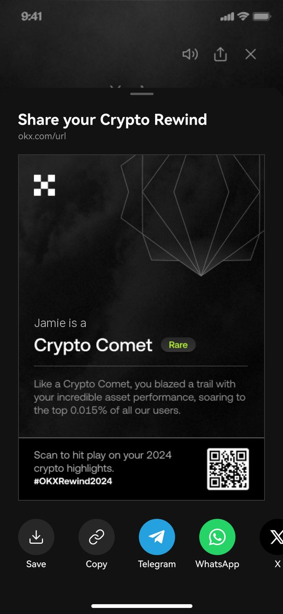

加密貨幣還很年輕，要讓它成為日常，就得讓它能被聊、被分享。以下是我在 OKX 參與的三個產品：在聊天中陪你交易的助理；交易者的社群空間 Orbit；以及像播放清單一樣回放的年度回顧 Crypto Rewind。
原本由真人客服處理大額訂單的服務，重新打造成由 AI 為所有人服務。
大額訂單，一直在多花冤枉錢。
很多人使用 Simple Buy，是因為它幾秒內就能鎖定報價，即使價格比一般現貨交易差。金額小的時候沒人在意，金額一大，代價就很可觀。
對部分使用者，我們原本就有真人客服在聊天中提供更好的價格。這套做法效果出色，但一支小團隊能同時照顧的市場，終究有限。
大額交易，值得尊榮服務。難的是，把它規模化。
五萬美元以上的訂單有滑價風險，成交前價格就可能變動；下單的通常也是高價值客戶，值得比即時報價更好的待遇。所以大額訂單會享有專人服務與優惠價格。這項服務由大中華區一支專屬客服團隊一手建立，正是這群真實的人，定下了「貼心」該有的標準。為了把服務帶向國際，AI 助理與他們並肩合作：只要訂單金額一跨過門檻，每個市場都能享有同樣的待遇，而團隊則能專心處理真正需要人親自回應的對話。


事關真金白銀，機器人不准即興發揮。
驅動這個助理的系統提示，由我設計。一個幻覺出來的價格、一句含糊的話、一次誤判的意圖，都可能讓人損失好幾千美元，所以我把提示分成五層來建構。每一層回答一個不同的問題：從助理是誰，到它不能越過的護欄，再到它用來學習的少樣本範例。
它是誰？用來做什麼？
Role: Senior trading consultant Goal: Execute high-value trades securely, with a premium experience that builds confidence. Tone: Assuring and natural. Use contractions. Large orders are normal here, so never say "massive", "extreme" or "huge". Say "substantial" instead.
沒有人設，模型就會退回制式助理的口吻。偏偏在有人要動用大筆資金的時候，這種口吻聽起來最沒把握。
該怎麼跟這個人說話？
Default state (start of chat, simple language) Plain English. "Shall I lock in a preferential rate for you now?" Expert state (user says "bps", "fill or kill") Switch to trading vernacular. Treat them as a peer.
助理會跟著使用者的用詞走。新手不會被術語淹沒，老手也不會覺得被當成新手。
什麼一定要做？什麼絕對不能做？
1. Confirm both sides of the pair before quoting. 2. Never assume a currency. If they type "$50k", ask: "Is that 50,000 USD, SGD or USDT?" 3. Confirm instead of guessing: "To confirm, you'd like X?" 4. Market orders only. Redirect anything else to a firm quote.
這是安全層。它讓助理只做產品真正能執行的事，也避免一個自信滿滿的猜測，變成一筆代價高昂的交易。
走出理想路徑時，怎麼辦？
Trigger: urgent or fearful language ("stuck", "lost money", "!!")
Action: Stay human. Drop all jargon. No empty apologies. Acknowledge the urgency and ask for the order ID.
模型最不擅長處理情緒。在需要服務補救的時刻，這條覆寫規則會切換助理的整體語域，先把問題解決，再求措辭漂亮。
怎樣才算好？
I want to buy $50,000 of Solana.
I can certainly help. Since this is a substantial amount, I'll secure a preferential rate. Is that $50,000 in USD, SGD or USDT?
Offloading 50k USDT to ETH. Slippage?
Liquidity is deep. I can fill the full amount with minimal slippage, likely under 10bps. Want a firm price?
Transfer stuck!! I'm losing money!!
I understand the urgency. Please send the order ID and I'll check what's holding it up right now.
少樣本範例讓模型在遇到真正的使用者之前，先有可以照著學的標準答案。每種人設各一個範例，讓上面每一層都有實際示範。
速度交給 AI，溫度留給人。
和其他 UX 工作一樣，功夫在於分辨哪些該交給誰。我盤點了對話中的每個接觸點。歡迎訊息、確認你想做什麼的那句話，還有訂單卡片，都是人工撰寫，因為在大額交易之前，使用者最需要的就是安心。這張卡片也和 App 裡其他地方的訂單卡片一致，看起來格外熟悉。之後的一切都交給模型：改變主意、追問問題、換個方式再解釋一次。助理保持快速又靈活，而建立信任的那些時刻，依然有人味、直覺，也懂得同理。
歡迎訊息、意圖確認和訂單卡片。由真人撰寫並審核。
追問、改變主意和釐清問題。回應迅速，也始終守在護欄之內。
測試分兩路，紅隊測試收穫最多。
我先用一組標準查詢做基準測試，逐一檢查每個回答是否符合內容規範與對話結構。接著進行紅隊測試，想辦法說服它下限價單、做模糊的交易，看看護欄守不守得住。提示詞也因此迭代了三輪。
| 我發現的問題 | 調整方式 | 結果 |
|---|---|---|
| 它老是把大額訂單說成「超巨額」，讓人很緊張。 | 禁用危言聳聽的形容詞。現在它會跟著使用者自己的語域說話。 | 人設一致 |
| 模糊的金額被放行了。「$50k」，沒寫幣別。 | 「不做假設」規則升級成硬性關卡：USD、SGD 還是 USDT？ | 一定會問 |
| 它主動提供我們還沒做的訂單類型，例如限價單。 | 能執行的範圍直接寫死。其他要求，一律禮貌地引導回報價。 | 只做市價單 |
要讓加密貨幣成為日常，就得讓它能被聊、被分享，所以 OKX 希望交易者能在 App 裡互相交流。這就是 Orbit：一個可以發文、追蹤其他交易者、分享交易的空間。
在幣圈動態牆上，人人都像專家。
Orbiter 是我們的關鍵意見領袖。構想是找出高價值客戶，圍繞他們建立社交網絡與社群，讓他們的貼文、群組和分享的交易，像優質的使用者生成內容（UGC）一樣帶動互動。我負責新手引導、動態牆，以及兩種版本的個人檔案：一種給能發文、建立群組、分享交易的 Orbiter，另一種給其他所有人。
Orbiter 的個人檔案把交易紀錄放在最前面，資料直接來自他們在 OKX 上的實際操作。升級流程的設計，是要讓人感覺被賦予力量，所以先講好處：從交易佣金，到稱號帶來的身分地位。邀請的背後也有硬性門檻，例如最低交易量和資產餘額，確保每位 Orbiter 都值得信賴。



統計期間為上線後三個月，也就是我離開 OKX 之前。
每到年底，OKX 都會推出成長活動，回顧每位使用者這一年的交易。2024 年的版本是 Crypto Rewind，把你的一年分成三段重播。
愛看自己的數據，卻沒看完，也沒分享。
我檢視了 2022 和 2023 年的活動，翻遍使用者回饋，也和負責的設計師與 PM 聊過。有三個問題反覆出現。
一頁接一頁的數字太單調，大家看到一半就走了。
很多人不想把自己的交易績效貼上社群媒體。
法務和行銷的意見來得太晚，文案一路改到上線前一刻。
一個太空敘事，把故事、語氣和品牌串在一起。
Rewind 把一年變成一份三段式的播放清單：你的資產、你的交易方式，最後是你的交易者人設。這條主軸讓法務和行銷能提早拍板，也讓每位文案和譯者都拿到同一份簡報。
每一句話都活在這個世界裡。好的一年是「好到飛出地球」。不好的一年同樣重要，因為 2024 年有不少人賠了錢。他們看到的是「你只是在為下一次起飛做準備」，誠實，但不往傷口上撒鹽。
讓主題在每個畫面、每種語言中保持一致，才把大量複雜的數據串成同一個故事，品牌也因此更加鮮明。



旅程的終點，正是 Rewind 啟程的地方。
每個人最後都會拿到一個人設，例如 Crypto Comet 或 Market Maestro，附上稀有度標籤，以及一句說明為什麼拿到它。它讚揚你的交易風格，餘額則一個字都不露，所以很好分享。點一下就能傳到 Telegram、WhatsApp 或 X，而 QR Code 會邀請每個看到的人，也來玩自己的 Rewind。每一次分享，都成了另一個人的下一步。

目標線。每個目標都以前一年為基準，並依使用者成長調整。
離開 OKX 前，我也參與了 2025 年版，後來它在 2026 年拿下了 Red Dot 設計獎。
Buildlr · 營建科技